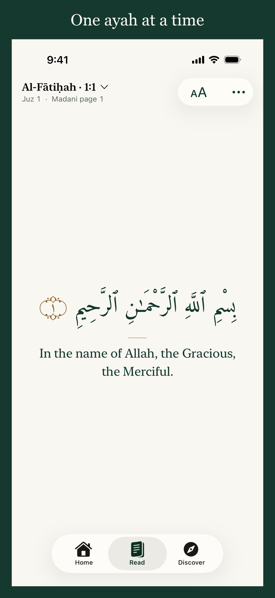
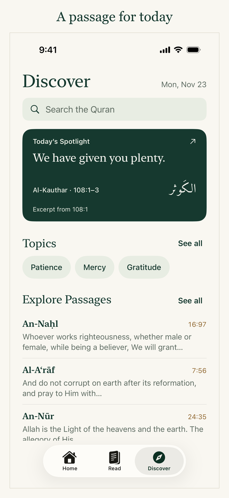
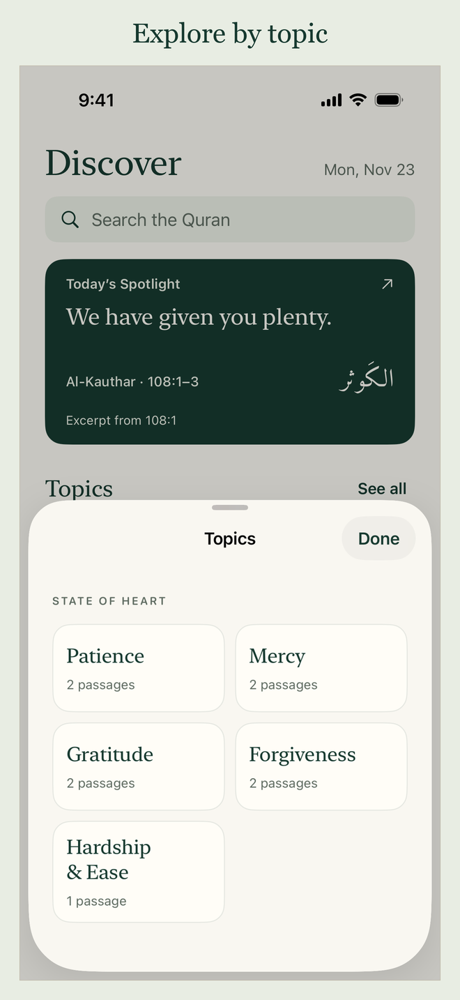
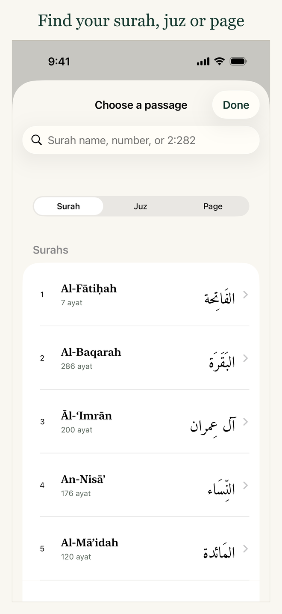
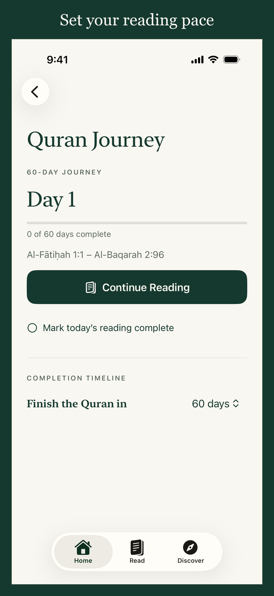
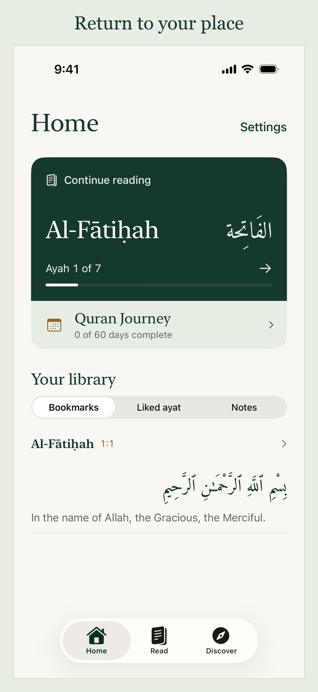

Read
From a single ayah to a whole surah
Choose Arabic, English, or both. Scroll continuously, swipe across ayat, or focus on one ayah at a time. Jump by surah, juz, or Madinah page number.
An offline Quran reader for iPhone
Start with one ayah. Read in Arabic, explore the meaning in English, and return to your place whenever you’re ready.
The reading experience
Open a short passage today, or make time to work through the whole Quran.
Read
Choose Arabic, English, or both. Scroll continuously, swipe across ayat, or focus on one ayah at a time. Jump by surah, juz, or Madinah page number.
Discover
Open Today’s Spotlight or explore passages on patience, mercy, gratitude, and other topics. Read the surrounding ayat for context.
Journey
Choose a timeline in Quran Journey and see your daily portion. Continue Reading takes you back to your place.
Library
Bookmark an ayah, save a passage, or write a personal note. Find them again in your library on Home.
App preview






Find answers about reading, saving, and using Quran: Ayah Stream offline.